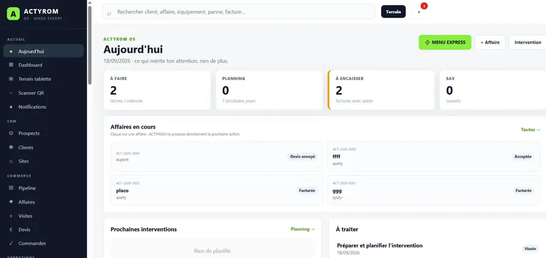
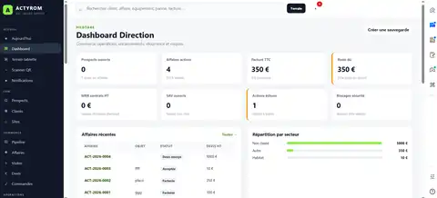
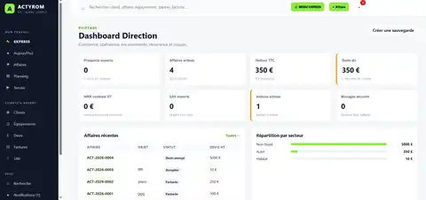

Menu Express
Créer rapidement un devis, une facture ou une action sans parcourir toute l’application.
Une interface web locale pensée pour centraliser le suivi d’une petite activité : prospect, devis, commande, intervention, rapport, facture, SAV et indicateurs.
Créer rapidement un devis, une facture ou une action sans parcourir toute l’application.
Architecture pensée pour un fonctionnement local et une maîtrise des données, selon la version livrée.
Une base commune pouvant recevoir des modules et adaptations métiers selon le besoin.
ACTYROM OS organise l’information selon le contexte : ce qui mérite une action aujourd’hui, les indicateurs de direction et une navigation simplifiée pour aller droit aux fonctions utiles.

Priorités, planning, encaissements, SAV et affaires en cours sont regroupés dans une vue quotidienne lisible.

Affaires actives, facturation, reste dû, récurrence, SAV, actions échues et répartition par secteur.

Express, affaires, planning, terrain, clients, équipements, devis, factures et SAV sans surcharge inutile.
Captures de développement · données de démonstration. L’interface et les fonctions peuvent évoluer selon la version livrée.
OS ACTYROM évolue par versions. Le niveau de finition et les fonctions disponibles dépendent de la version proposée au moment de la commande.
Chaque livraison doit préciser les modules inclus, le périmètre, l’installation, les données gérées, la sauvegarde et les conditions de maintenance.
Voir les versions